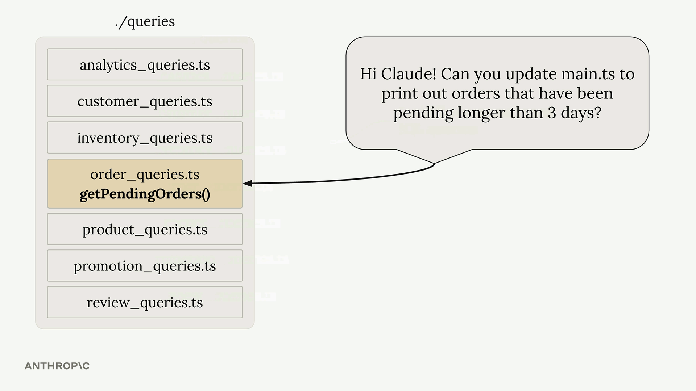
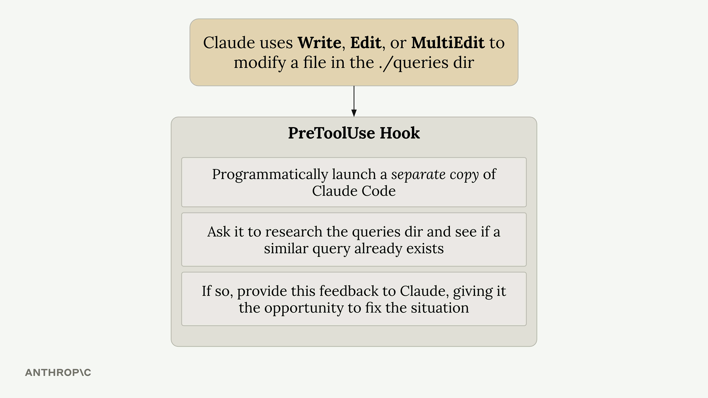

유용한 훅!
Claude Code 훅은 AI 지원 개발에서 흔히 나타나는 약점, 특히 대규모 프로젝트에서의 문제를 해결하는 데 도움이 됩니다. 이 훅들은 Claude가 코드를 변경할 때 자동으로 실행되어 즉각적인 피드백을 제공하고 일반적인 문제를 사전에 방지합니다.
TypeScript 타입 검사 훅
가장 유용한 훅 중 하나는 근본적인 문제를 해결합니다. Claude가 함수 시그니처를 수정할 때, 프로젝트 전체에서 해당 함수가 호출되는 모든 위치를 업데이트하지 않는 경우가 많습니다.
예를 들어, Claude에게 schema.ts의 함수에 verbose 매개변수를 추가하도록 요청하면, 함수 정의는 성공적으로 업데이트하지만 main.ts의 호출 위치는 누락합니다. 이로 인해 Claude가 즉시 발견하지 못하는 타입 오류가 발생합니다.
해결책은 모든 파일 편집 후 TypeScript 컴파일러를 실행하는 post-tool-use 훅입니다:
-
tsc --noEmit을 실행하여 타입 오류를 검사합니다 - 발견된 오류를 수집합니다
- 오류를 즉시 Claude에게 다시 전달합니다
- 다른 파일의 문제를 수정하도록 Claude에게 요청합니다
이 훅은 타입 검사기를 실행할 수 있는 모든 타입 언어에서 동작합니다. 타입이 없는 언어의 경우, 자동화된 테스트를 활용해 유사한 기능을 구현할 수 있습니다.
쿼리 중복 방지 훅
데이터베이스 쿼리가 많은 대규모 프로젝트에서 Claude는 기존 코드를 재사용하는 대신 중복 기능을 새로 만드는 경우가 있습니다. 이는 데이터베이스 작업이 일부 포함된 복잡한 다단계 작업을 Claude에게 맡길 때 특히 문제가 됩니다.
여러 쿼리 파일로 구성된 프로젝트 구조를 생각해보세요. 각 파일에는 많은 SQL 함수가 들어 있습니다. Claude에게 "3일 이상 대기 중인 주문을 알려주는 Slack 연동을 만들어 달라"고 요청하면, 기존의 getPendingOrders() 함수를 활용하는 대신 새로운 쿼리를 작성할 수 있습니다.

쿼리 중복 방지 훅은 검토 프로세스를 구현하여 이 문제를 해결합니다:

작동 방식은 다음과 같습니다:
-
Claude가
./queries디렉터리의 파일을 수정할 때 트리거됩니다 - 별도의 Claude Code 인스턴스를 프로그래밍 방식으로 실행합니다
- 두 번째 인스턴스에게 변경 사항을 검토하고 유사한 기존 쿼리가 있는지 확인하도록 요청합니다
- 중복이 발견되면 원래 Claude 인스턴스에 피드백을 제공합니다
- 중복을 제거하고 기존 기능을 사용하도록 Claude에게 요청합니다
구현 시 고려 사항
두 훅 모두 pre-tool-use 또는 post-tool-use 훅 시스템을 사용합니다. TypeScript 훅은 비교적 가볍고 빠르게 실행됩니다. 쿼리 중복 방지 훅은 각 검토마다 별도의 Claude 인스턴스를 실행하므로 더 많은 리소스가 필요합니다.
쿼리 훅의 경우 다음 트레이드오프를 고려하세요:
- 장점: 중복이 줄어 더 깔끔한 코드베이스 유지
- 비용: 쿼리 디렉터리 편집 시마다 추가 시간 및 API 사용량 발생
- 권장 사항: 오버헤드를 최소화하기 위해 중요한 디렉터리만 모니터링
훅은 Claude의 TypeScript SDK를 사용하여 AI와 프로그래밍 방식으로 상호작용합니다. 이를 통해 한 Claude 인스턴스가 다른 인스턴스의 작업을 검토하고 피드백을 제공하는 정교한 워크플로우를 만들 수 있습니다.
개념 확장하기
이 훅들은 자신의 프로젝트에 적용할 수 있는 더 넓은 원칙을 보여줍니다:
- 컴파일러/린터 출력을 활용하여 즉각적인 피드백 제공
- 별도의 AI 인스턴스를 사용하여 코드 검토 프로세스 구현
- 일관성이 가장 중요한 고가치 디렉터리에 모니터링 집중
- 자동화의 이점과 성능 비용 간의 균형 유지
핵심은 개발 워크플로우에서 구체적인 문제 지점을 파악하고, 해당 문제를 자동으로 해결하는 맞춤형 훅을 만드는 것입니다.